What is the main purpose of strategic management?
- The slide’s definition: formulating, implementing and evaluating cross-functional decisions to achieve objectives.
Projects don’t happen in a vacuum: three features of the parent organization shape how they are run. Strategy: strategic management formulates, implements and evaluates decisions, and projects are how strategy gets implemented; stakeholders inside and outside the organization pull projects in different directions. Structure: functional, project and matrix organizations (and heavyweight project teams), each with strengths and weaknesses for projects, plus the PMO’s levels, forms and models. Culture: the unwritten rules of behavior, what shapes them, and the four ways they affect project management.
Strategic management = formulate, implement and evaluate cross-functional decisions; projects (new plants, products, IT) carry the strategy out.
Functional = grouped by similar activities (deep expertise, silos). Project = temporary project teams (fast, expensive). Matrix = dual hierarchy (coordination, two bosses).
Levels 1–3 (project → business unit → corporate); forms by control (supportive, controlling, directive); models by purpose (weather station, control tower, resource pool).
Unwritten rules of behavior, shared by a subset, taught to newcomers; affects departmental interaction, commitment, planning and performance evaluation.
The instructor’s 2026 midterm asked three questions from this deck: how employees are grouped in a functional organization, what describes a project organization, and the main purpose of strategic management. Finals asked about the PMO (Final 242) and how PM helps achieve strategic objectives (Final 251); the Midterm 251 case asked which team structure you would set up.
Every original slide is shown unchanged. Yellow marks on a slide point to a numbered note: hover or tap a mark to jump to its note, and hover a note to see its marks. Questions tagged Past exam appeared on a real paper; Prediction questions are likely angles, not confirmed. Pick an answer to each question: a wrong pick tells you why it is wrong, so you can try again.
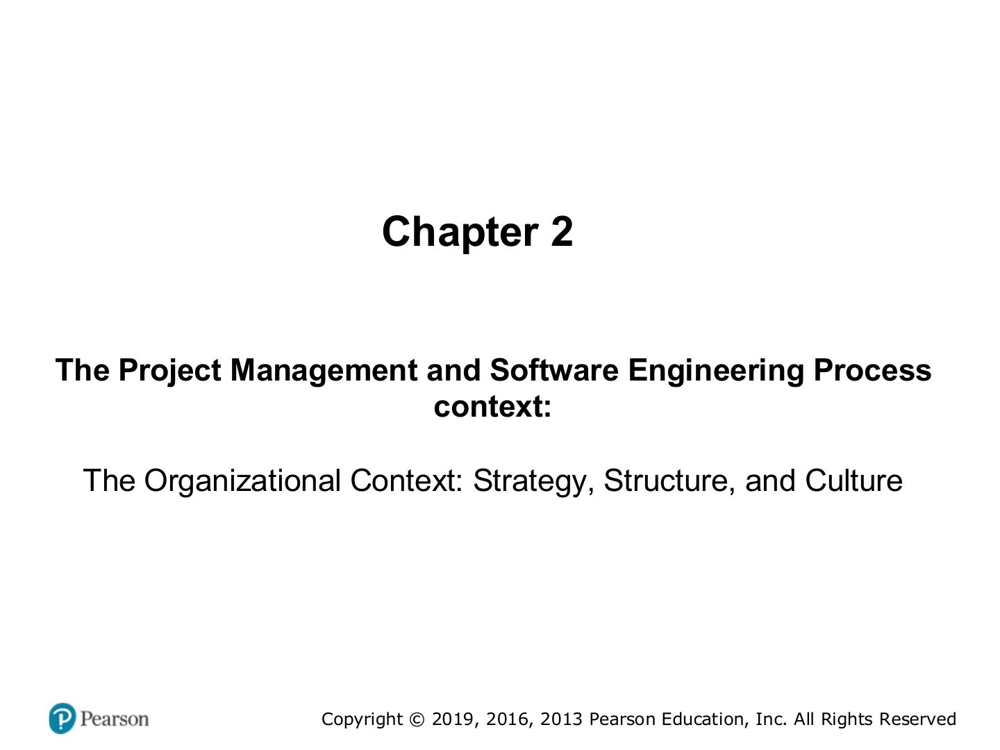
This chapter (from Pinto’s Project Management) looks at the three organizational features that shape how projects are run: strategy (why projects exist), structure (who reports to whom and how resources are shared) and culture (the unwritten rules people follow).
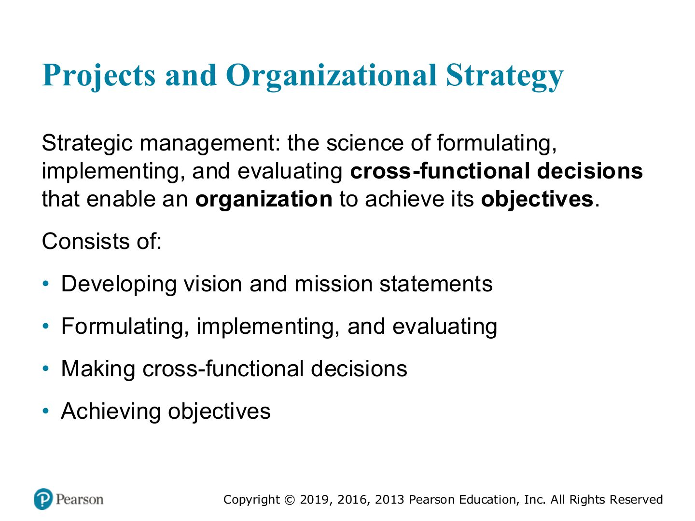
It’s just the organization deciding where it wants to go and getting there. Cross-functional matters, because a goal like “enter a new market” needs sales, engineering and finance to act together, and so do the projects that carry it out.
You can’t choose a path without a destination, so vision and mission come first. After that comes a loop, because evaluating results may send you back to change the strategy.
This is the test for any strategy: did we reach our objectives? A beautifully written plan with no results has failed.
What is the main purpose of strategic management?
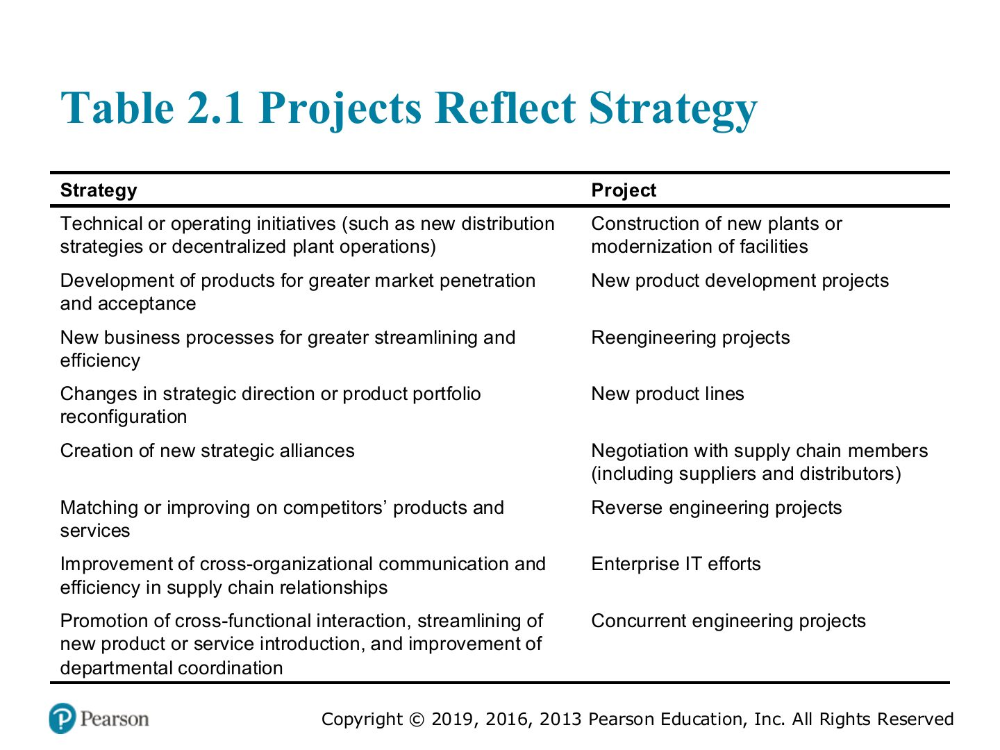
The table’s point: projects are how strategy gets implemented. Each strategic intention on the left becomes a type of project on the right.
See the pattern: a business goal becomes concrete work. “Sell to more customers” stays vague until someone runs a new product development project. “Be more efficient” becomes reengineering, which redesigns how the work is done.
If a project can’t be linked to a row like this, ask why it’s being funded. For example, reverse engineering studies a competitor’s product to match it. Pick one or two rows as examples when explaining how PM supports strategy.
How does project management contribute to organizations in achieving their strategic objectives? Please elaborate.
Strategy is carried out through projects. Project management selects and prioritizes projects (through portfolios and programs) so they align with strategic objectives, then delivers them so the outputs create the intended outcomes, benefits and value. It uses limited resources efficiently, controls scope, time and cost, and manages risk and change. That lets the organization reach its goals and respond to its market faster than competitors.
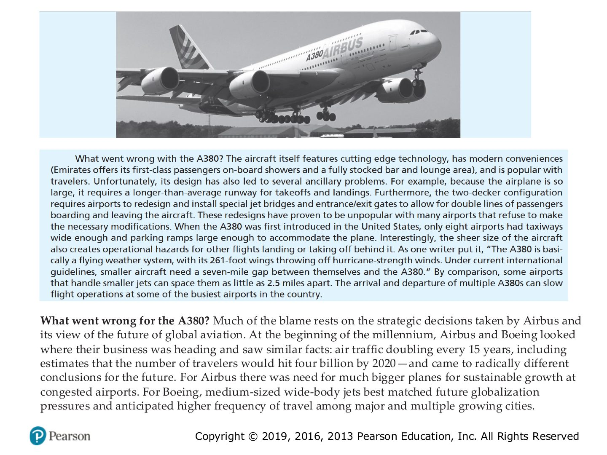
The A380 was an engineering achievement, and the planes flew. It still failed commercially, so the lesson is about strategy: delivering the wrong thing well doesn’t help.
Same data, opposite conclusions. That’s the point: facts don’t choose a strategy, and people’s interpretation does. Airbus bet on giant planes flying between hub airports.
Boeing concluded that medium-sized wide-body jets flying directly between more cities fitted the future better, and the market followed Boeing. Lesson: a project can be well run and still fail if the strategy behind it is wrong.
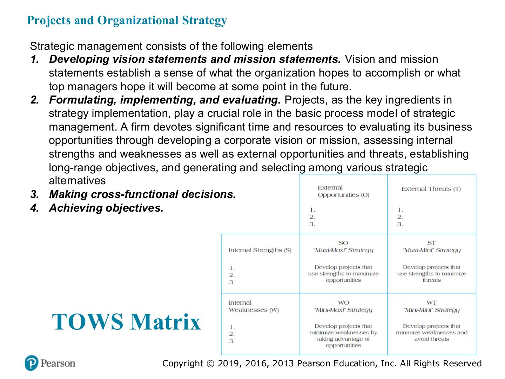
A vision is where we want to be, while a mission is what we do and for whom. Without them, nobody can judge whether a proposed project fits, so every department pulls its own way.
Projects are how a strategy actually happens: a plan to enter a market means nothing until a project builds the product. That’s why they’re called the key ingredients in strategy implementation.
Strategy fails if each department decides alone. Cross-functional decisions weigh the whole organization, and achieving objectives is the measure of whether it all worked.
The TOWS matrix turns SWOT into strategies: SO (use strengths to seize opportunities), ST (use strengths against threats), WO (overcome weaknesses using opportunities), WT (minimize weaknesses and avoid threats).
In a TOWS matrix, a strategy that uses internal strengths to take advantage of external opportunities is called:
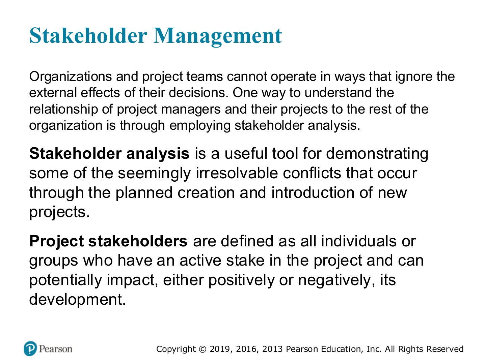
A project can pollute a river or upset a community and still be on budget, but those people can stop you. So you can’t just focus inward: external effects come back to the project.
Mapping who wants what shows where the PM stands and whose support is needed. That’s the purpose of stakeholder analysis: seeing the politics clearly enough to plan for them…
…and it shows that some conflicts have no clean answer. When groups want opposite things, you can’t please everyone, so the PM manages the trade-off. That’s why they’re called irresolvable conflicts (a new system that helps sales may burden operations).
The test is whether they have an interest and can affect the outcome. Note the wording, positively or negatively: a supplier can speed you up, and a protest group can hold you back.
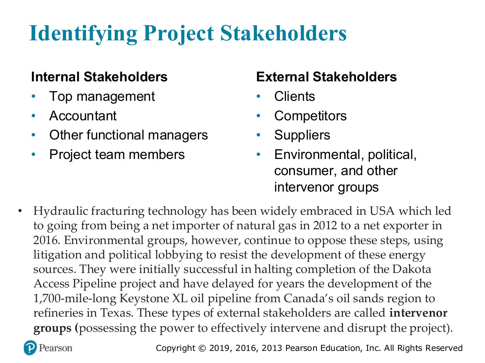
These people work inside your organization, and you can usually reach them through its hierarchy. Each has different concerns: the accountant cares about spending, while top management cares about strategy.
You have less control over these, so you must persuade or plan around them. Competitors count even though they aren’t involved, because their moves can make your project pointless.
They aren’t customers or partners, but they can still stop you. Intervenor groups are easy to overlook, which is exactly why the slide’s pipeline case hurt: the project was held up for years by lawsuits and lobbying.
Edugate scheduling system: identify three main stakeholder groups for this project, describe their roles, and explain how their input will shape the system.
Students are the end users; their input shapes usability and flexibility (0.3). The IT/Edugate team ensures integration, security and compliance with PSU IT policies (0.3). Faculty advisors and administration ensure study-plan rules are enforced and use the system to monitor students (0.4).
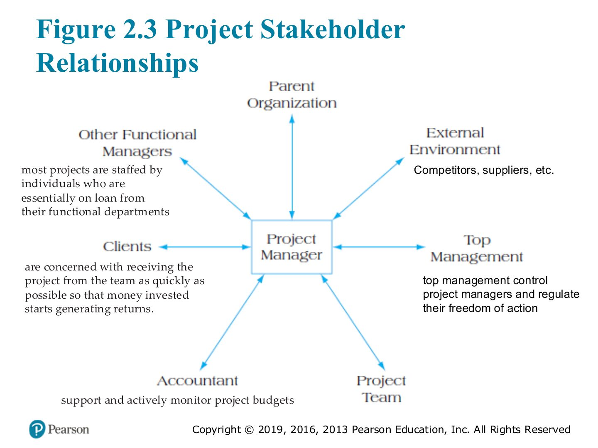
A functional manager lends you a good engineer and loses them for months, so don’t be surprised at some resistance. Their goal, keeping their own department running, conflicts with yours even though nobody’s wrong.
The client has paid and wants the benefit, so speed is their priority. That can conflict with quality, or with the time your team needs: their view of as quickly as possible isn’t the same as yours.
Top management supports you, but also needs to keep an eye on you, as it’s their money and risk. So expect both help and limits. That’s why control sits next to support in this diagram.
Accountants: support and actively monitor project budgets. The PM sits in the middle, balancing all of them.
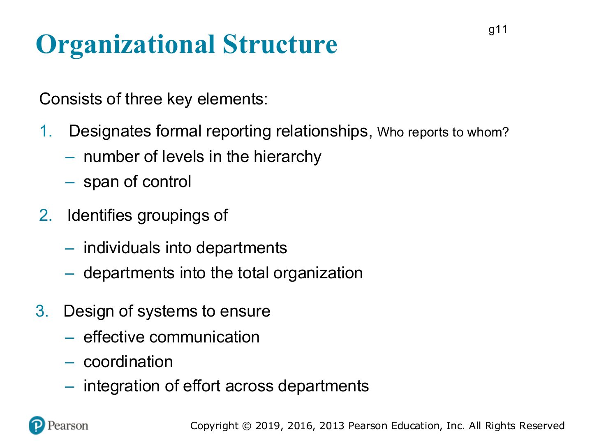
Everyone should know who decides what. A small span of control means close supervision but many layers, while a wide one means more freedom and fewer layers, and more layers slow every decision.
Why group at all? Putting similar people together builds expertise, but it also creates the walls between departments that projects have to cross.
Grouping creates walls, and these systems are the doors. Without them, departments don’t share information. Projects cut across departments, so this third element is where they succeed or struggle.
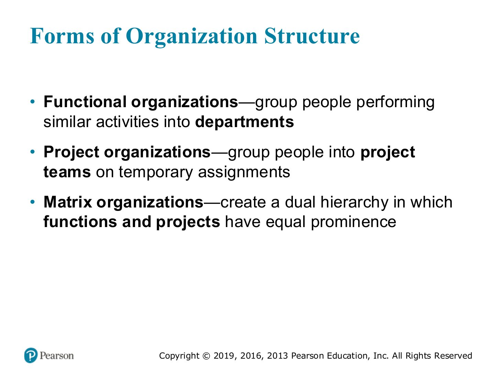
Think of a school arranged by subject: all math teachers together. Functional organizations are great for building expertise, but nobody owns work that spans several departments.
Here the project is the main unit, and people belong to it until it’s over. A project organization suits firms that earn their money from projects, like construction companies.
A matrix tries to get both benefits at once. It keeps expert departments and still has strong projects, at the cost that a person may have two bosses: a functional manager and a project manager.
How are employees grouped in a functional organization?
Which statement best describes a project organization?
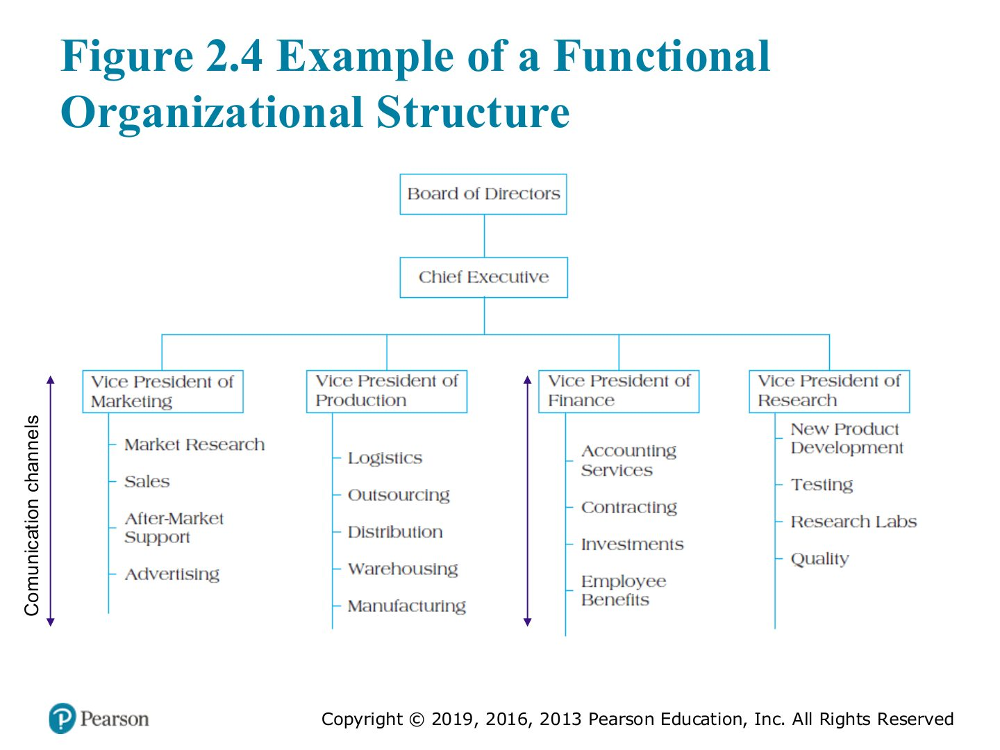
A functional structure: departments (engineering, manufacturing, marketing, finance, accounting) under the president, each with its own sub-units.
The vertical arrows show communication channels running up and down inside each function, not across. Coordinating a cross-functional project means going up one chain and down another, which is slow: the root of the silo weakness on the next slide.
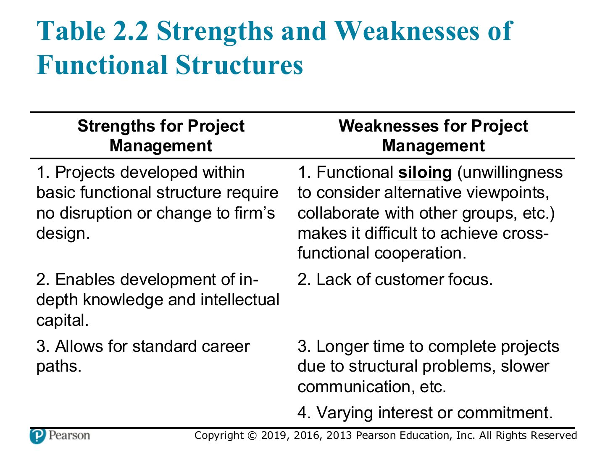
There’s nothing to reorganize, so you can start right away. For a small project staying within one department, this is the simplest option, since you just assign it within the existing structure.
Specialists sit together and learn from each other. That builds deep knowledge in one field, which is very valuable for technically hard work.
A person’s next role is clear, like junior to senior engineer. That’s reassuring to staff, unlike project-based work where the next assignment is uncertain, so career paths are a real strength.
People protect their own department’s view. Each one may do its piece well, but no one takes care of how pieces fit together. So siloing is the weakness to name first.
People are rewarded by their department, so that’s who they work to please. Nobody owns the customer’s whole experience, which is what lack of customer focus means.
Longer project times (slower communication through the hierarchy) and varying interest or commitment, since the project is nobody’s main job.
Which is a weakness of functional structures for project management?
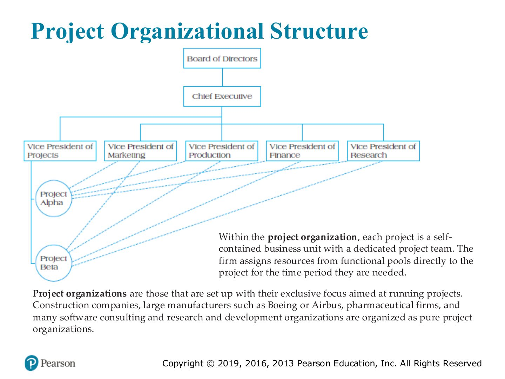
Think of each project as a small company. A dedicated team works only on it, so nobody’s attention is split with other work.
People join for the time they’re needed and then leave. This keeps costs down compared to holding someone for a whole project, but it also means they move on once their part is done.
Their income comes from delivering projects, so it makes sense to organize around them. A hospital is mostly routine operations, while a construction company is mostly projects.
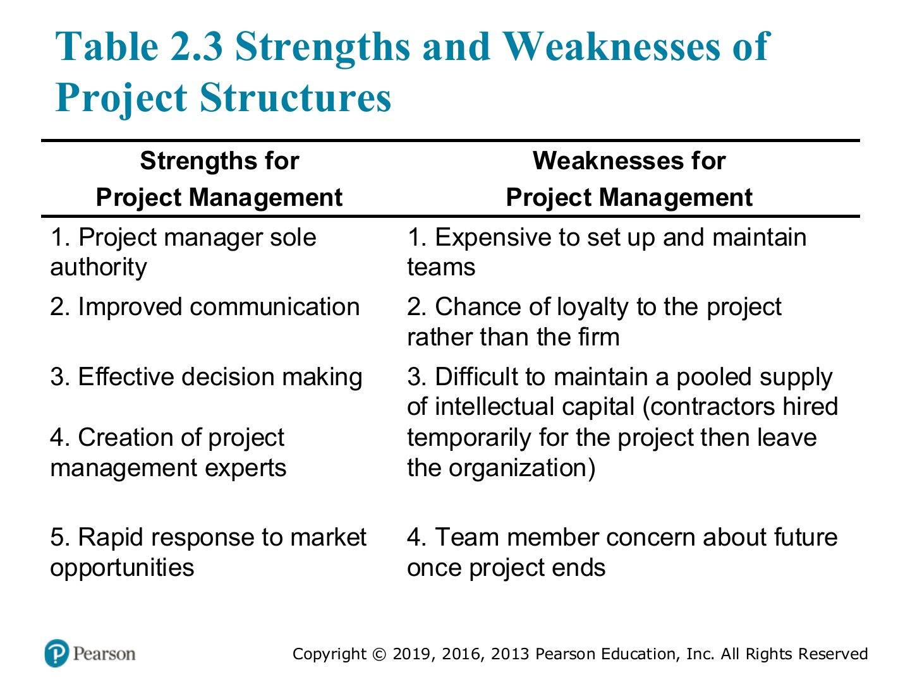
There’s no need to negotiate with other managers for decisions or staff. One person can decide, so problems get fixed fast, and that’s what sole authority gives you.
A team working on just one thing talks all the time, with no layers between them. That’s why communication and decision-making improve, and doing projects all day also builds real PM experts.
A competitor launches something and you can react right away, because you’re not waiting for several departments to agree. That’s the value of a rapid response.
The costs add up: every project needs its own full set of staff and equipment, even if another team has spares. Such duplication is what makes it expensive.
People identify with “their” project. They may also make decisions that help it but hurt the company, and specialists who leave take their knowledge with them, so loyalty cuts both ways.
What happens to me when this ends? If no job is waiting, good people may start looking elsewhere just when you need them most for the finish. That’s why they worry about their future.
Which is a strength of the project organizational structure?
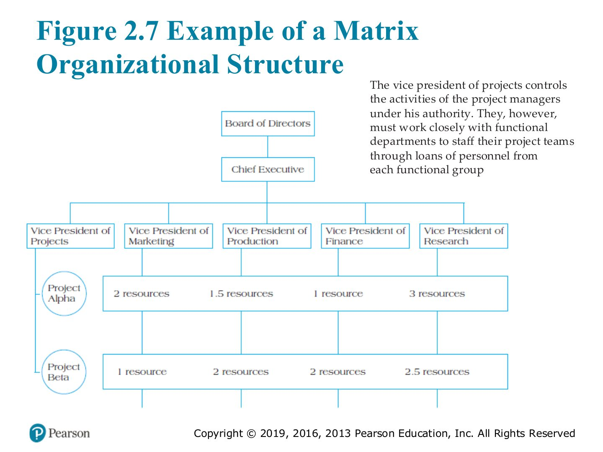
Read the chart as a grid. The rows are projects, run by project managers reporting to the VP of projects. It’s the “project” half of the matrix…
…but the PMs must work closely with the functional departments (columns) to staff their teams through loans of personnel from each function: the “2 resources”, “1.5 resources” cells show how many people each department lends to each project.
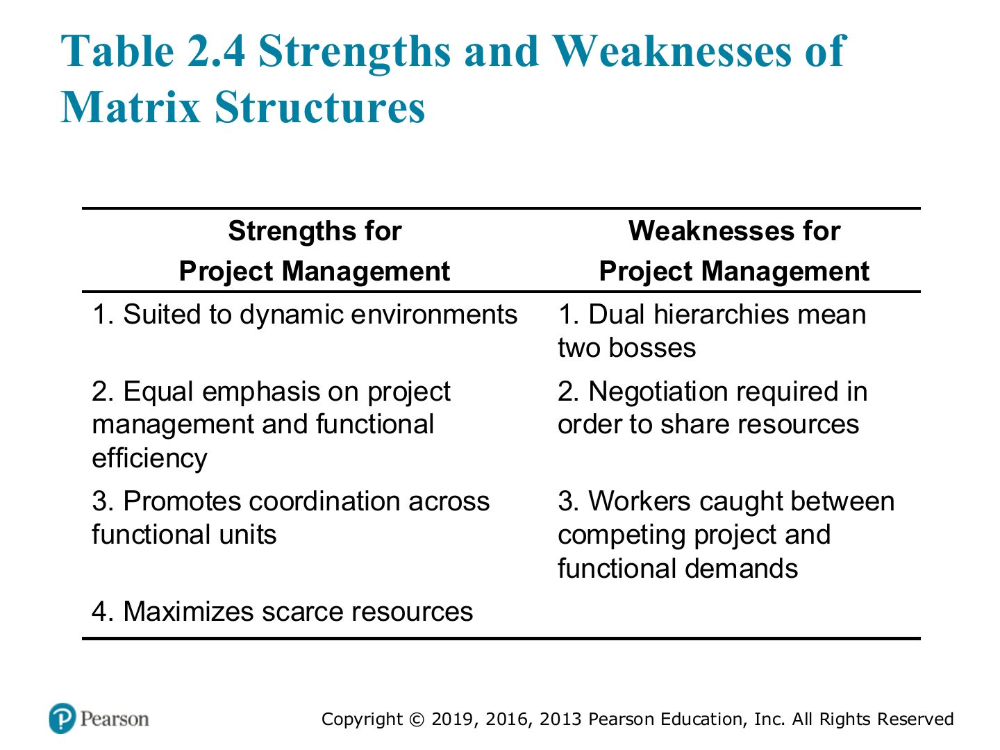
When priorities change, people can be moved between projects without reorganizing the company. That’s why it’s suited to dynamic environments, unlike a rigid structure.
Neither side automatically wins, so expert departments stay strong while projects also get attention. That’s the intent behind equal emphasis, though keeping the balance takes constant work.
Because a person belongs to both a department and a project, information moves between them naturally. So coordination across units improves.
If you only have one security expert, a matrix lets three projects share them part time. So it’s a good fit when specialists are in short supply, which maximizes scarce resources.
Your project manager wants the task today and your department head wants something else. Whose priority wins? That’s the daily experience of two bosses, and it causes stress for the people in the middle.
Nothing is given automatically, so managers must agree on who gets whom, and when. Negotiation takes time and depends on relationships. “Two bosses” is never a strength.
What is the main weakness of the matrix structure?
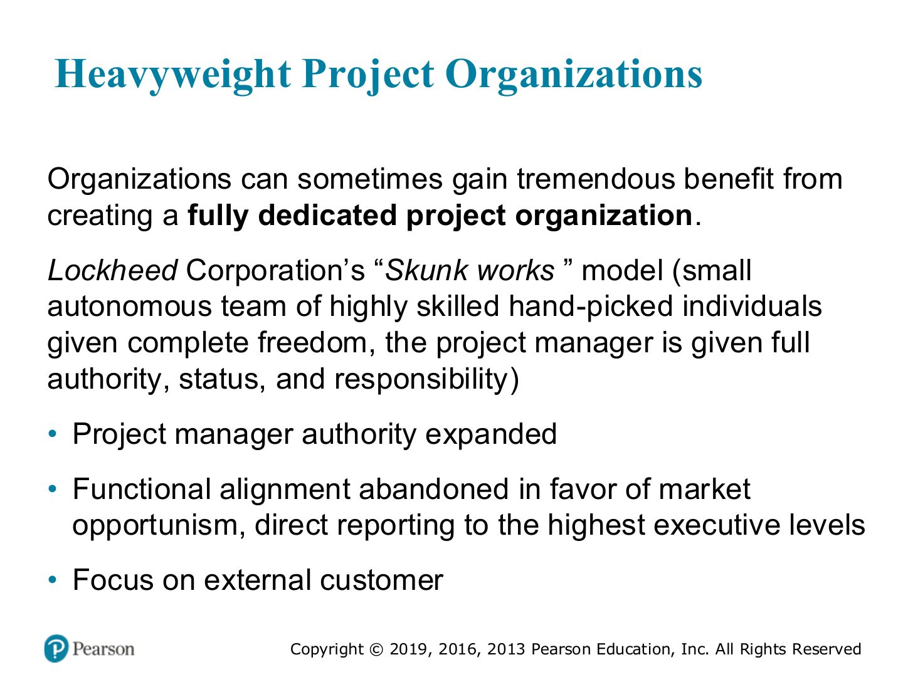
Normal structures are slowed by approvals and competing priorities. For an urgent, high-stakes goal, a company may remove those limits. A heavyweight team is that exception, and it’s costly, so it isn’t for every project.
Why would it work? Few people, top talent, no red tape. Skunk Works teams built advanced aircraft fast this way, because they could decide without waiting for anyone outside the team.
The PM gets real power, like a senior executive, and doesn’t need to ask for permission. That’s the meaning of PM authority expanded, compared with a PM who has to persuade people…
…departments no longer shape the work. The team goes after what the market wants and reports directly to the top, so its news doesn’t get diluted on its way up…
…and success gets judged by the external customer, not by how well internal rules were followed. That keeps the team’s attention on what really counts.
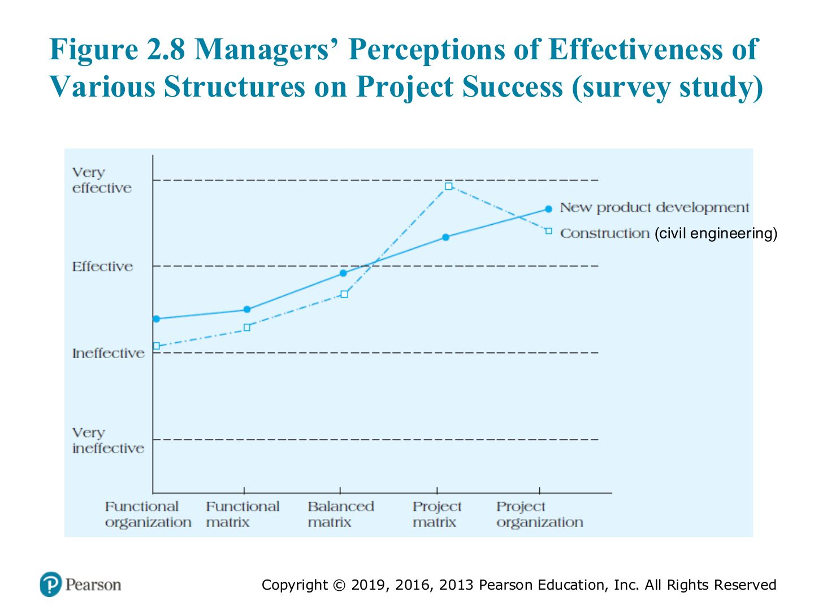
A survey of managers’ perceptions of how effective each structure is for project success, from functional through functional matrix, balanced matrix and project matrix to project team.
The trend: the more project-oriented the structure, the more effective managers judge it for projects; for new product development the project matrix and project team score highest. (A survey result to understand, not to memorize.)
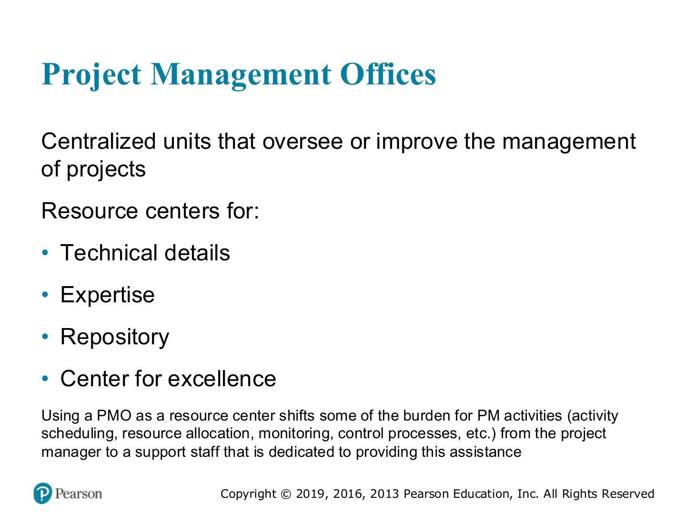
Without a PMO, each PM reinvents their own way of working. A central office brings consistency, so that projects can be compared and lessons shared across them.
They act as resource centres for technical details, expertise, a repository (templates, lessons learned, past project data) and a center of excellence for PM practice.
A PM buried in schedules and reports has no time to lead people. So moving that work to support staff frees them up, which is why the PMO shifts some of the burden.
What is a Project Management Office (PMO) and its role in organizations?
A PMO is a centralized organizational unit that oversees and standardizes how projects are managed. It sets PM standards, methods and templates, trains and supports project managers, monitors and reports on project performance, and coordinates resources across projects. Its control ranges from supportive (consultative) to controlling (requires compliance) to directive (manages the projects directly).
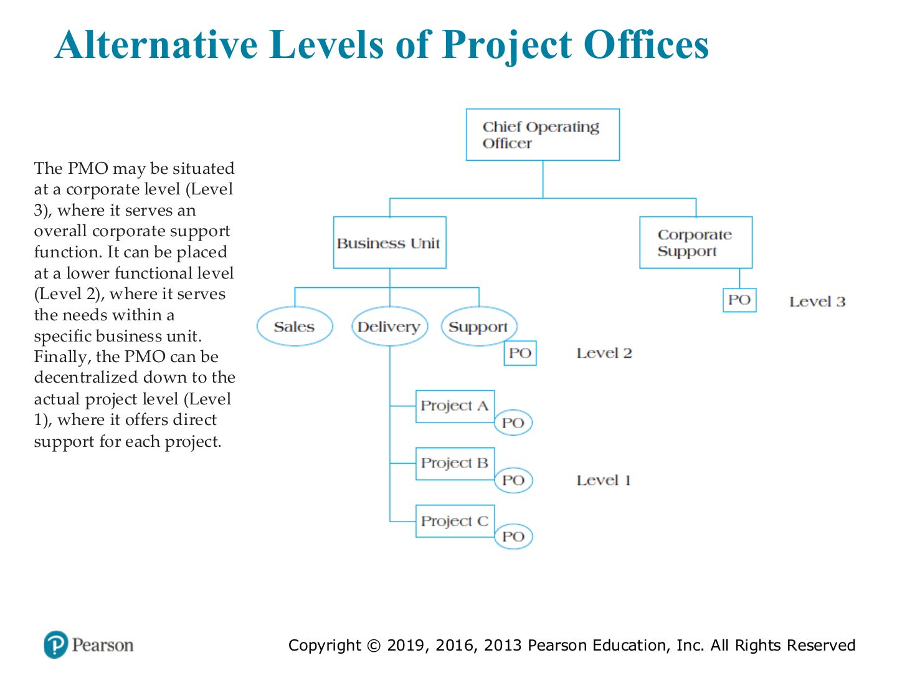
The higher up it sits, the wider its view. A corporate office can compare all projects and advise on which matter most, but it’s further from daily project details.
One department’s projects may need specific methods, say for engineering. A business unit office gives that closer support, while staying aware of more than one project.
Level 1, project: decentralized to the individual project, giving direct support. The numbering runs upward: Level 1 is the narrowest scope, Level 3 the widest.
A PMO that serves the needs within one specific business unit is at which level?
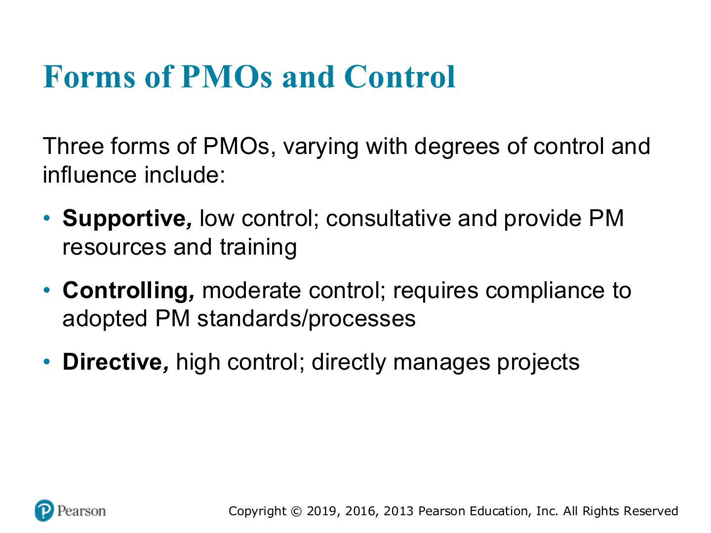
Think of it as advice you’re free to ignore. A supportive PMO offers templates and training and has little power, so it works where project teams are already capable…
Now there are rules to follow, and someone checks. Controlling brings consistency across projects, at the cost of some freedom for each PM.
It no longer advises, because it runs the projects itself. Directive gives the most control, and it suits critical work where the company wants central authority.
A PMO that requires projects to comply with its adopted standards and templates, but does not run the projects itself, is which form?
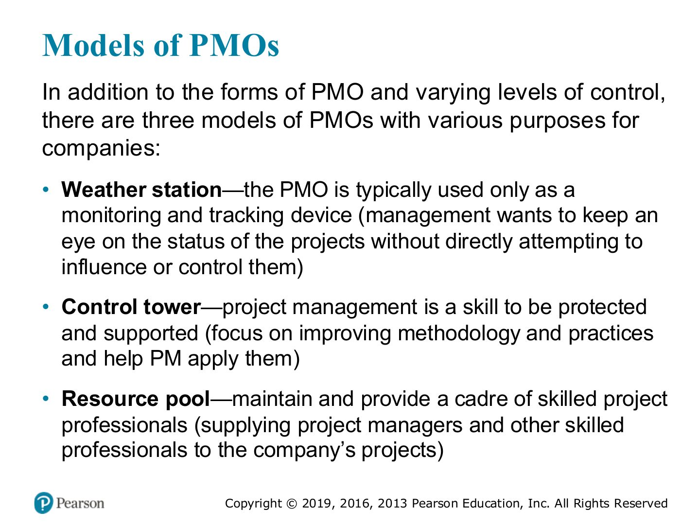
Think of a weather report: it tells you what’s happening but doesn’t change it. A weather station PMO only reports status, so if management asks “what’s going on?” and nothing more, this is the model.
A control tower guides planes without flying them. A control tower PMO is about improving how PM is done, through better methods and helping PMs use them.
Need a PM for a new project? Ask the pool. Like staff in a talent agency, the resource pool supplies people, so its value is having skilled professionals available.
A consultancy keeps a bench of certified project managers and assigns them to client projects as needed. Which PMO model is this?
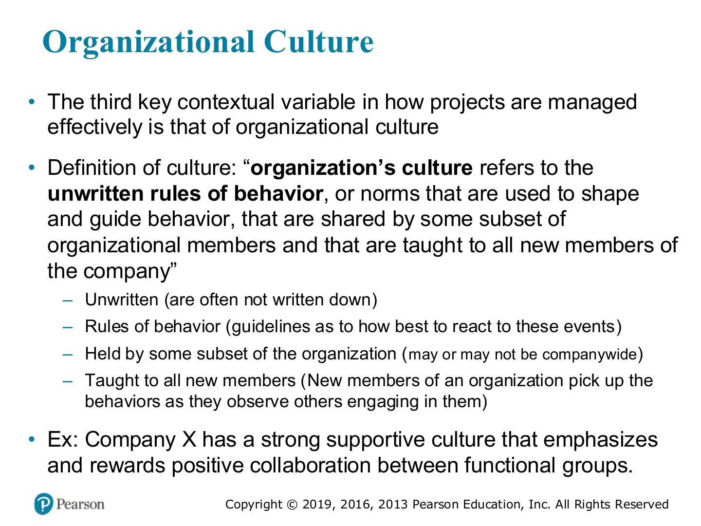
After strategy (why) and structure (who reports to whom), this asks how people really behave. It’s the third contextual variable, and it’s the hardest to see, since nobody hands you a chart of it.
What a new employee learns by the second week, without being told: is it OK to disagree with the boss? Do people actually leave at 5? That’s what the definition means by unwritten rules.
The four parts: unwritten (rarely written down); rules of behavior (how to react to events); held by a subset (not necessarily company-wide: engineering can have a different culture from sales); taught to new members (newcomers pick it up by watching others). Example: a culture that rewards collaboration between functional groups.
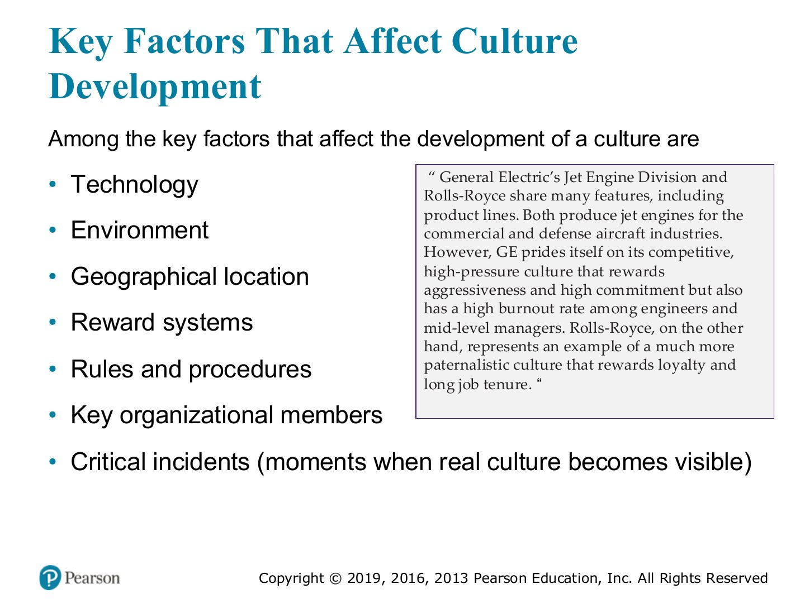
Each factor pushes behavior a certain way. Fast-changing technology favors experimenting, while a highly regulated environment favors caution. Geography matters too, since workplace habits differ between countries.
…reward systems, rules and procedures, and key organizational members. GE’s jet-engine division and Rolls-Royce make the same product for the same markets, yet GE rewards aggressiveness and high commitment (with high burnout) while Rolls-Royce is paternalistic and rewards loyalty and long tenure, largely because of what each rewards.
People learn what’s truly valued from what happens in a crisis. If a project fails and leaders look for someone to blame, everyone learns to hide problems. Such critical incidents teach more than any official statement.
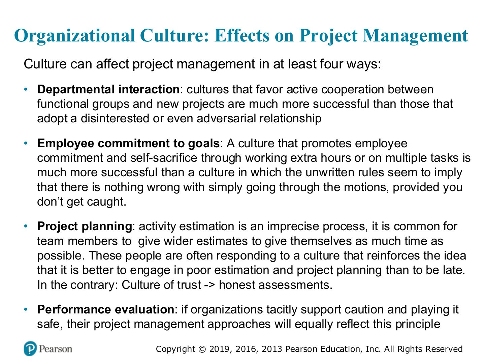
A PM needs people and help from other departments. In a culture of cooperation they get it, but where departments see projects as someone else’s problem, every request becomes a fight.
The same plan gets very different results depending on whether people care about it. In one culture they stay to fix a problem, and in another they do the minimum. That’s commitment.
Honest estimates need safety. If someone is punished for being late, they’ll pad every number, so plans become unreliable. Trust makes it possible to report real figures.
People do what gets rewarded, whatever the posters say. If only safe results are rewarded, no one proposes anything bold, which is how performance evaluation shapes what projects attempt.
Your team pads every estimate by 50% because missing a date is punished. Which effect of culture is this, and how would you address it?
Culture affecting project planning: a culture that punishes lateness reinforces inflated estimates. Build a culture of trust in which honest estimates are not punished, handle uncertainty openly with risk reserves, and estimates become realistic.